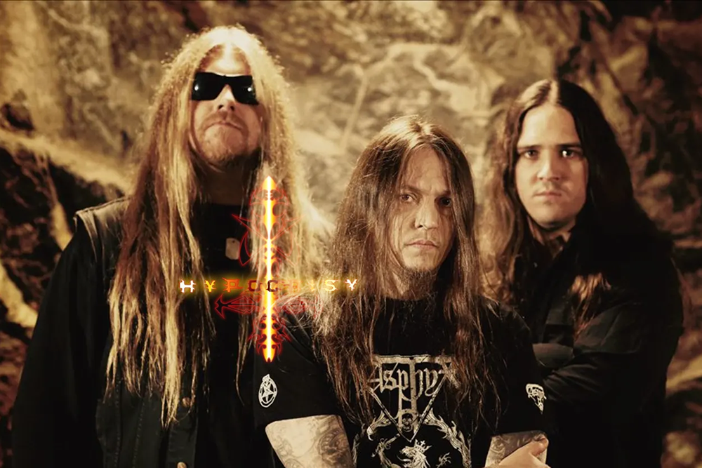

Hypocrisy (с англ. — «Лицемерие», «Притворство») — шведская
дэт-метал-группа,сформированная в 1990 году Петером Тэгтгреном.
С
1990 по 1994 год группа играла дэт-метал, добавив в него с 1995 года
элементы мелодизма.
